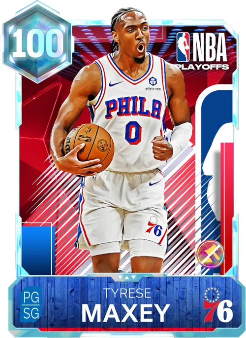

恩比德因伤错过赛季开局，费城在磨合中一度跌到五成胜率以下。詹姆斯指导马克西和VJ成长，随后迎回强势复出的恩比德；球队用一波20连胜结束常规赛，再连续跨过骑士、尼克斯、猛龙和掘金，靠总决赛G6的压哨扣篮捧起王朝第一冠。
五年后，当勒布朗·詹姆斯和恩比德坐在座无虚席的费城十万人大球场正中央，捧着五座总冠军奖杯、五座FMVP奖杯和大家一起欢度庆典时，谁能想到这一切，都归功于遥远印第安纳街头，拄着拐杖沿街乞讨的老朽凯里·欧文。
如果不是当年他一心想当老大执意出走，也就不会诞生如今这恐怖的费城王朝。
马克西也在另一个詹姆斯的指导下持续进化：从当年跟着哈登学习节奏，到如今在勒布朗身边接过王朝的下一棒，费城的后场火种从未熄灭。
街边居民屋内的电视持续直播庆典，镜头里詹姆斯笑着指向恩比德怀里两座FMVP奖杯，打趣说道：
“你还比我少一个哟。”